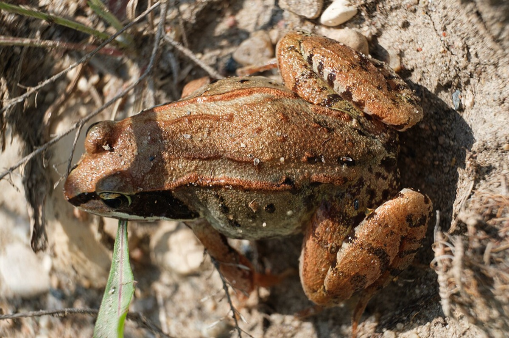
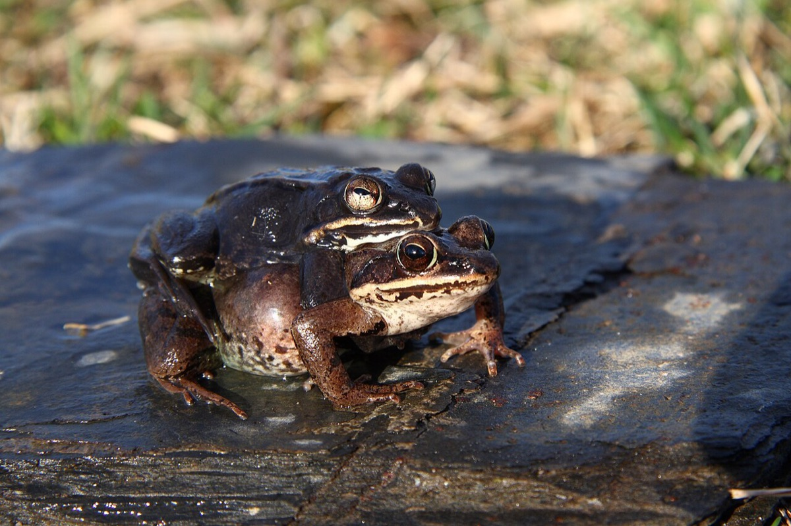

Wood Frog
Lithobates sylvaticus (Rana sylvatica in older books; the sources read give no Latin name)
- Kind
- amphibian · Ranidae
- Native to Vermont
- yes
- Legal status
- Not listed as threatened or endangered in the sources read. Wood frogs are one of four 'pool-specialist' amphibians that need vernal pools to breed; vernal pools are protected under the Vermont Wetland Rules (Voluntary Harvesting Guidelines). (checked 2026-10-30)
- Look-alikes
- Spring peeper (calls at the same pools); Spotted salamander and other pool breeders
Pictures


Names
Wood frog. A forest-dwelling frog, not arboreal, that spends most of its time on the forest floor. Of Vermont's 11 frog and toad species, the Landowner's Guide notes only the boreal chorus frog is listed as endangered and Fowler's toad as a species of special concern.
Range and habitat
Wood frogs breed in vernal pools and live in the moist woodland around them. Four Vermont amphibians breed almost only in vernal pools: wood frog, spotted salamander, Jefferson salamander and blue-spotted salamander. Wood frogs travel much greater distances than the salamanders (no figure given). In summer they use moist woodlands, forested swamps, ravines or bogs; in fall they move to nearby uplands to overwinter.
How to identify (by season; look-alikes and the key difference)
- Size: 2.0 to 2.8 inches (51 to 70 mm), females larger (Wikipedia).
- Color: usually brown, tan or rust-colored, darkening in sun, with pale underparts tinted yellow or green and usually a dark eye mask (Wikipedia).
- Voice: loud, duck-like quacking from a vernal pool in early spring (the Fish & Wildlife fact sheet).
- Spring peepers breed at the same pools but do not require them.
Through the year
Dates are typical for Vermont and shift with elevation and year; "approximate" means the source gave a season and the dates are a translation of it.
| When | What | Look for | What to do | Dates |
|---|---|---|---|---|
| Mar 25 to Apr 30 | calling (watch) | In early spring, right after snowmelt and often with spring peepers, males chorus at vernal pools with loud, duck-like quacking. The first warm, rainy night in March or April brings salamanders to the pools too. | - | approximate |
| Mar 25 to May 15 | breeding (watch) | Eggs are attached to submerged plants or downed branches, usually next to other egg masses. Tadpoles must finish developing before the pool dries. | - | approximate |
| Aug 15 to Oct 15 | survey (identify) | A good time to find vernal pools after they dry (they typically dry by late summer): a cup-shaped basin with little vegetation, thicker organic soil than the surrounding forest, and water stains on leaves and the forest floor. | - | approximate |
| Oct 15 to Mar 20 | dormant (avoid) | In fall frogs move into the forest around the pool and overwinter in the upper organic soil under leaf litter, able to survive freezing. Keep leaf litter and downed wood, and avoid deep ruts. | - | approximate |
Signs on the land (tracks, scat, browse, nests, holes, calls)
- The chorus at a vernal pool in early spring; egg masses attached to submerged sticks and plants.
- Finding the pool later: a cup-shaped basin with little vegetation, thicker organic soil and water stains on leaves and the forest floor.
- What else lives there: other pool-breeding salamanders, fairy shrimp, fingernail clams, caddisflies, copepods; predators and users include barred owls (Barred Owl), great blue herons, mink and raccoons. Pools have no fish because they dry.
Role in the forest (what it eats, what eats it, what it needs)
Frogs eat insects, spiders, mites and worms and are food for fish, birds and other animals. They survive winter by freezing: they can survive freezing of roughly 65 to 70 percent of body water, with no detectable heartbeat or breathing (Wikipedia). Dry years can mean few eggs and hatchlings.
What helps it thrive (light, soil, shelter, food and the trees it uses)
- Water, shade and cover (the Guide, chapter 30). Most reptiles and amphibians need water for some stage of their life: conserve streams, ponds, wetlands and vernal pools. Frogs, toads and most salamanders lay eggs in water; many breed in temporary vernal pools free of fish, where the young change from egg to larva to adult in one summer if the pool stays wet (dry years give few eggs or hatchlings). Keep intact forest buffers along water, rock walls, brush piles, downed trees and hollow stumps; leave intact leaf litter and rotten logs; leave coarse woody debris when working in the woods ('woods that look like city parks are not good habitat'); keep streams shaded and free of sediment with a naturally vegetated buffer for night-time feeding; abundant shade keeps the woods cool and moist.
- This species: breeds in vernal pools and woodland temporary ponds; the vernal pool buffer and harvest figures from the state's fact sheet are recorded in this note under Managing. Gray treefrogs, wood frogs, spring peepers and many salamanders inhabit shady wet woodlands with temporary seasonal ponds (Guide).
Managing for it (habitat practices) and living with it (conflicts and damage)
From the vernal pool fact sheet (the state's recommendations to landowners):
- No activity within the pool depression or the adjacent 100 feet.
- No permanent roads or development from 100 to 650 feet of the pool. A study cited on the page found a 500 to 600 foot buffer would protect 95 percent of a pool's salamander population.
- For timber harvest nearby: keep at least 60 percent canopy cover and harvest only when the ground is frozen and snow-covered. Leave downed wood for moist habitat; avoid deep ruts that disrupt migration; avoid disturbing the pool substrate.
- Landowner's Guide: leave leaf litter and rotting logs, coarse woody debris, shade, and vegetated buffers on streams. Woods that look like city parks are poor habitat for amphibians.
- See R-VT-004 Vernal Pool ESTA for how a vernal pool counts under the Use Value Appraisal program.
Legal status
The fact sheet cites no specific law; the Voluntary Harvesting Guidelines say the Vermont Wetland Rules protect vernal pools and their buffers, and that timber harvesting is an allowed use as long as the natural configuration and flow of water through the wetland is not altered by filling, dredging or grading. Confirm with the county forester and the Wetlands program before working near a pool.
Sources
- Vermont Fish & Wildlife Department, Vernal Pool natural community fact sheet: https://www.vtfishandwildlife.com/conserve/conservation-planning/natural-community-fact-sheets/vernal-pool (read 2026-10-30)
- Vermont Fish & Wildlife Department, A Landowner's Guide, chapter 30, Reptiles and Amphibians (read 2026-10-30): https://vtfishandwildlife.com/sites/fishandwildlife/files/documents/Learn%20More/LandownersGuide/Landowner-Guide-Complete.pdf
- Vermont Department of Forests, Parks and Recreation, Voluntary Harvesting Guidelines for Landowners in Vermont (2015), section 1.3 (read 2026-10-30)
- Wikipedia, Wood frog (secondary; read 2026-10-30): https://en.wikipedia.org/wiki/Wood_frog
- Vermont Fish & Wildlife Department, A Landowner's Guide, Wildlife Habitat Management for Lands in Vermont, chapter 30 (Reptiles and Amphibians): https://vtfishandwildlife.com/sites/fishandwildlife/files/documents/Learn%20More/LandownersGuide/Landowner-Guide-Complete.pdf (read as text 2026-11-01)
What this page is based on
Kind of source: mixed (the vernal pool fact sheet and the Landowner's Guide are primary-agency; the frog's appearance and winter ecology are from Wikipedia, a secondary source)
What was read: The Vermont Fish & Wildlife vernal pool natural community fact sheet and the reptiles and amphibians chapter of the department's A Landowner's Guide (both read 2026-10-30), plus the Wikipedia wood frog article (summarizing fetch, secondary). No source read gives breeding months for wood frogs ('early spring') or tadpole timing, so the dates are approximate. The Latin name is not in the sources read; Lithobates sylvaticus is added as the current accepted name and should be checked. Habitat needs added 2026-11-01 from chapter 30 of the Vermont Fish and Wildlife Landowner's Guide (read as text).
Last checked: 2026-10-30
Vermont land and forest reference, built 2026-11-01. Rules and dates here are summaries, not legal advice; dates shift with elevation and year. Photo and recording credits · Note: _reference/US-VT/Species/Wood Frog.md